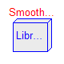
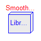

In this package types and constants are defined that are used in library Modelica.Blocks. The types have additional annotation choices definitions that define the menus to be built up in the graphical user interface when the type is used as parameter in a declaration.
| Name | Description |
|---|---|
| Extrapolation | Type, constants and menu choices to define the extrapolation of time table interpolation |
| Smoothness | Type, constants and menu choices to define the smoothness of table interpolation |